Условные обозначения. Коммутационные устройства и контактные соединения (ГОСТ 2.755-87)
Настоящий стандарт распространяется на схемы, выполняемые вручную или автоматизированным способом, изделий всех отраслей промышленности и строительства, и устанавливает условные графические обозначения коммутационных устройств и их элементов.
Настоящий стандарт не устанавливает условные графические обозначения на схемах железнодорожной сигнализации, централизации и блокировки. Условные графические обозначения механических связей, приводов и приспособлений - по ГОСТ 2.721-74. Условные графические обозначения воспринимающих частей электромеханических устройств - по ГОСТ 2.756-76. Размеры отдельных условных графических обозначений и соотношение их элементов приведены в приложении.
1. Общие правила построения обозначений контактов
- 1.1 Коммутационные устройства на схемах должны быть изображены в положении, принятом за начальное, при котором пусковая система контактов обесточена.
- 1.2 Контакты коммутационных устройств состоят из подвижных и неподвижных контакт-деталей.
- 1.3 Для изображения основных (базовых) функциональных признаков коммутационных устройств применяют условные графические обозначения контактов, которые допускается выполнять в зеркальном отображении:
Наименование
Обозначение
1) замыкающих
2) размыкающих 3) переключающих 4) переключающих с нейтральным
центральным положением
1.4 Для пояснения принципа работы коммутационных устройств при необходимости на их контакт-деталях изображают квалифицирующие символы, приведенные в табл. 1.
Таблица 1
Наименование функции Обозначение 1. Функция контактора 2. Функция выключателя 3. Функция разъединителя 4. Функция выключателя-разъединителя 
5. Автоматическое срабатывание 6. Функция путевого или концевого выключателя 7. Самовозврат 
8. Отсутствие самовозврата 9. Дугогашение
Примечание. Обозначения, приведенные в пп. 1-4, 7-9 настоящей таблицы, помещают на неподвижных контакт-деталях, а обозначения в пп. 5 и 6 - на подвижных контакт-деталях.
2. Примеры построения обозначений контактов коммутационных устройств приведены в табл. 2.
Таблица 2
Наименование Обозначение 1. Контакт коммутационного устройства:
1) переключающий без размыкания цепи (мостовой)
2) с двойным замыканием
3) с двойным размыканием
2. Контакт импульсный замыкающий:
1) при срабатывании
2) при возврате
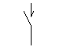
3) при срабатывании и возврате
3. Контакт импульсный размыкающий:
1) при срабатывании 2) при возврате
3) при срабатывании и возврате
4. Контакт в контактной группе, срабатывающий раньше по отношению к другим контактам группы:
1) замыкающий

2) размыкающий
5. Контакт в контактной группе, срабатывающий позже по отношению к другим контактам группы:
1) замыкающий
2) размыкающий
6. Контакт без самовозврата:
1) замыкающий
2) размыкающий
7. Контакт с самовозвратом:
1) замыкающий
2) размыкающий
8. Контакт переключающий с нейтральным центральным положением с самовозвратом из левого положения и без возврата из правого положения 9. Контакт контактора:
1) замыкающий
2) размыкающий
3) замыкающий дугогасительный
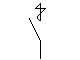
4) размыкающий дугогасительный
5) замыкающий с автоматическим срабатыванием
10. Контакт выключателя
11. Контакт разъединителя
12. Контакт выключателя-разъединителя
13. Контакт концевого выключателя:
1) замыкающий
2) размыкающий
14. Контакт, чувствительный к температуре (термоконтакт):
1) замыкающий
2) размыкающий
15. Контакт замыкающий с замедлением, действующим:
1) при срабатывании
2) при возврате
3) при срабатывании и возврате
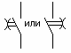
16. Контакт размыкающий с замедлением, действующим:
1) при срабатывании

2) при возврате 3) при срабатывании и возврате Примечание к пп. 15 и 16. Замедление происходит при движении в направлении от дуги к ее центру
3. Примеры построения обозначений контактов двухпозиционных коммутационных устройств приведены в табл. 3.
Таблица 3
Наименование Обозначение 1. Контакт замыкающий выключателя:
1) однополюсный 2) трехполюсный 2. Контакт замыкающий выключателя трехполюсного с автоматическим срабатыванием максимального тока 3. Контакт замыкающий нажимного кнопочного выключателя без самовозврата с размыканием и возвратом элемента управления:
1) автоматически 2) посредством вторичного нажатия кнопки

3) посредством вытягивания кнопки
4) посредством отдельного привода (например нажатия кнопки-сброс)
4. Разъединитель трехполюсный
5. Выключатель-разъединитель трехполюсный
6. Выключатель ручной
7. Выключатель электромагнитный (реле)
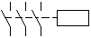
8. Выключатель концевой с двумя отдельными цепями
9. Выключатель термический саморегулирующий
Примечание. Следует делать различие в изображении контакта и контакта термореле, изображаемого следующим образом 
10. Выключатель инерционный 11. Переключатель ртутный трехконечный
4. Примеры построения обозначений многопозиционных коммутационных устройств приведены в табл. 4.
Таблица 4
Наименование Обозначение 1. Переключатель однополюсный многопозиционный (пример шестипозиционного)
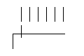
Примечание. Позиции переключателя, в которых отсутствуют коммутируемые цепи, или позиции, соединенные между собой, обозначают короткими штрихами (пример шестипозиционного переключателя не коммутирующего электрическую цепь в первой позиции и коммутирующего одну и ту же цепь в четвертой и шестой позиции)
2. Переключатель однополюсный шестипозиционный с безобрывным переключателем 3. Переключатель однополюсный многопозиционный с подвижным контактом, замыкающим три соседние цепи в каждой позиции 4. Переключатель однополюсный многопозиционный с подвижным контактом, замыкающим три цепи, исключая одну промежуточную 5. Переключатель однополюсный многопозиционный с подвижным контактом, который в каждой последующей позиции подключает параллельную цепь к цепям, замкнутым в предыдущей позиции 6. Переключатель однополюсный шестипозиционный с подвижным контактом, не размыкающим цепь при переходе его из третьей в четвертую позицию 
7. Переключатель двухполюсный четырехпозиционный 8. Переключатель двухполюсный шестипозиционный, в котором третий контакт верхнего полюса срабатывает раньше, а пятый контакт- позже, чем соответствующие контакты нижнего полюса 
9. Переключатель многопозиционный независимых цепей (пример шести цепей) Примечания к пп. 1-9
1. При необходимости указания ограничения движения привода переключателя применяют диаграмму положения, например
1) привод обеспечивает переход от позиции 1 к позиции 4 и обратно 2) привод обеспечивает переход от позиции 1 к позиции 4 и далее в позицию 1; обратное движение возможно только от позиции 3 к позиции 1 2. Диаграмму положения связывают с подвижным контактом переключателя линией механической связи
10. Переключатель со сложной коммутацией изображают на схеме одним из следующих способов:
1) общее обозначение (например обозначение восемнадцати позиционного роторного переключателя с шестью зажимами, обозначенными от A до F) 2) обозначение, составленное согласно конструкции 11. Переключатель двухполюсный трехпозиционный с нейтральным положением 12. Переключатель двухполюсный трехпозиционный с самовозвратом в нейтральной положение
5. Обозначения контактов контактных соединений приведены в табл. 5.
Таблица 5
Наименование Обозначение
1. Контакт контактного соединения:
1) разъемного соединения- штырь- гнездо
2) разборного соединения
3) неразборного соединения
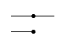
2. Контакт скользящий:
1) по линейной токопроводящей поверхности
2) по нескольким линейным токопроводящим поверхностям
3) по кольцевой токопроводящей поверхности
4) по нескольким линейным кольцевым проводящим поверхностям Примечание. При выполнении схем с помощью ЭВМ допускается применять штриховку вместо зачернения
6. Примеры построения обозначений контактных соединений приведены в табл. 6.
Таблица 6
Наименование Обозначение 1. Соединение контактное разъемное
2. Соединение контактное разъемное четырехпроводное
3. Штырь четырехпроводного контактного разъемного соединения
4. Гнездо четырехпроводного контактного разъемного соединения
Примечание. В пп. 2-4 цифры внутри прямоугольников обозначают номера контактов 5. Соединение контактное разъемное коаксиальное 6. Перемычки контактные
(вид связи см. табл. 5 п.1) 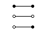 7. Колодка зажимов
Примечание. Для указания видов контактных соединений допускается применять следующие обозначения: 1) колодки с разборными контактами 
2) колодки с разборными и неразборными контактами 8. Перемычка коммутационная:
1) на размыкание 2) с выведенным штырем 3) с выведенным гнездом 4) на переключение 9. Соединение с защитным контактом
7. Обозначения элементов искателей приведены в табл. 7.
Таблица 7
Наименование Обозначение 1. Щетка искателя с размыканием цепи при переключении

2. Щетка искателя без размыкания цепи при переключении
3. Контакт (выход) поля искателя
4. Группа контактов (выходов) поля искателя
5. Поле искателя контактное
6. Поле искателя контактное с исходным положением
Примечание. Обозначение исходного положения применяют при необходимости
7. Поле искателя контактное с изображением контактов (выходов)
8. Поле искателя с изображением групп контактов (выходов)

8. Примеры построения обозначений искателей приведены в табл. 8.
Таблица 8
Наименование Обозначение 1. Искатель с одним движением без возврата щеток в исходное положение
2. Искатель с одним движением c возвратом щеток в исходное положение
Примечание. При использовании искателя в четырехпроводном тракте применяют обозначение искателя с возвратом щеток в исходное положение
3. Искатель с двумя движениями с возвратом щеток в исходное положение
4. Искатель релейный
5. Искатель моторный с возвратом в исходное положение
6. Искатель моторный с двумя движениями, приводимый в движение общим мотором
7. Искатель с изображением контактов (выходов) с одним движением без возврата щеток в исходное положение:
1) с размыканием цепи при переключении 2) без размыкания цепи при переключении
8. Искатель с изображением контактов (выходов) с одним движением с возвратом щеток в исходное положение:
1) с размыканием цепи при переключении 2) без размыкания цепи при переключении 9. Искатель с изображением групп контактов (выходов) (пример искателя с возвратом щеток в исходное положение)
10. Искатель шаговый с указанием количества шагов вынужденного и свободного искания (пример 10 шагов вынужденного и 20 шагов свободного искания)
11. Искатель с двумя движениями с возвратом в исходное положение и с указанием декад и подсоединения к определенной (шестой) декаде 12. Искатель с двумя движениями, с возвратом в исходное положение и многократным соединением контактных полей несколькими искателями (например двумя) Примечание. Если возникает необходимость указать, что искатель установлен в нужное положение с помощью маркировочного потенциала, поданного на соответствующий контакт контактного поля, следует использовать обозначение (например положения 7)
9. Обозначения многократных координатных соединителей приведены в табл. 9.
Таблица 9
Наименование Обозначение 1. Соединитель координатный многократный. Общее обозначение
2. Соединитель координатный многократный в четырехпроводном тракте
3. Вертикаль многократного координатного соединителя
Примечание. Порядок нумерации выходов допускается изменять 4. Вертикаль многократного координатного соединителя с m выходами 5. Соединитель координатный многократный с n вертикалями и с m выходами в каждой вертикали Примечание. Допускается упрощенное обозначение: n - число вертикалей, m - число выходов в каждой вертикали
Приложение. Справочное
10. Размеры (в модульной сетке) основных условных графических обозначений приведены в табл. 10.
Таблица 10
Наименование Обозначение 1. Контакт коммутационного устройства
1) замыкающий 2) размыкающий 3) переключающий 2. Контакт импульсный замыкающий при срабатывании и возврате 3. Переключатель двухполюсный шестипозиционный, в котором третий контакт верхнего полюса срабатывает раньше, а пятый контакт - позже, чем соответствующие контакты нижнего полюса
Настоящий стандарт распространяется на схемы, выполняемые вручную или автоматизированным способом, изделий всех отраслей промышленности и строительства, и устанавливает условные графические обозначения коммутационных устройств и их элементов.
Настоящий стандарт не устанавливает условные графические обозначения на схемах железнодорожной сигнализации, централизации и блокировки. Условные графические обозначения механических связей, приводов и приспособлений - по ГОСТ 2.721-74. Условные графические обозначения воспринимающих частей электромеханических устройств - по ГОСТ 2.756-76. Размеры отдельных условных графических обозначений и соотношение их элементов приведены в приложении.
1. Общие правила построения обозначений контактов
- 1.1 Коммутационные устройства на схемах должны быть изображены в положении, принятом за начальное, при котором пусковая система контактов обесточена.
- 1.2 Контакты коммутационных устройств состоят из подвижных и неподвижных контакт-деталей.
- 1.3 Для изображения основных (базовых) функциональных признаков коммутационных устройств применяют условные графические обозначения контактов, которые допускается выполнять в зеркальном отображении:
| Наименование | Обозначение |
|---|---|
| 1) замыкающих | |
| 2) размыкающих | |
| 3) переключающих | |
| 4) переключающих с нейтральным центральным положением |
1.4 Для пояснения принципа работы коммутационных устройств при необходимости на их контакт-деталях изображают квалифицирующие символы, приведенные в табл. 1.
| Наименование функции | Обозначение |
|---|---|
| 1. Функция контактора | |
| 2. Функция выключателя | |
| 3. Функция разъединителя | |
| 4. Функция выключателя-разъединителя | |
| 5. Автоматическое срабатывание | |
| 6. Функция путевого или концевого выключателя | |
| 7. Самовозврат | |
| 8. Отсутствие самовозврата | |
| 9. Дугогашение |
Примечание. Обозначения, приведенные в пп. 1-4, 7-9 настоящей таблицы, помещают на неподвижных контакт-деталях, а обозначения в пп. 5 и 6 - на подвижных контакт-деталях.
2. Примеры построения обозначений контактов коммутационных устройств приведены в табл. 2.
| Наименование | Обозначение |
|---|---|
| 1. Контакт коммутационного устройства: 1) переключающий без размыкания цепи (мостовой) |
|
| 2) с двойным замыканием | |
| 3) с двойным размыканием | |
| 2. Контакт импульсный замыкающий: 1) при срабатывании |
|
| 2) при возврате | 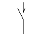 |
| 3) при срабатывании и возврате | |
| 3. Контакт импульсный размыкающий: 1) при срабатывании | |
| 2) при возврате | |
| 3) при срабатывании и возврате | |
| 4. Контакт в контактной группе, срабатывающий раньше по отношению к другим контактам группы: 1) замыкающий |
|
| 2) размыкающий | |
| 5. Контакт в контактной группе, срабатывающий позже по отношению к другим контактам группы: 1) замыкающий |
|
| 2) размыкающий | |
| 6. Контакт без самовозврата: 1) замыкающий |
|
| 2) размыкающий | |
| 7. Контакт с самовозвратом: 1) замыкающий |
|
| 2) размыкающий | |
| 8. Контакт переключающий с нейтральным центральным положением с самовозвратом из левого положения и без возврата из правого положения | |
| 9. Контакт контактора: 1) замыкающий |
|
| 2) размыкающий | |
| 3) замыкающий дугогасительный | 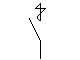 |
| 4) размыкающий дугогасительный | |
| 5) замыкающий с автоматическим срабатыванием | |
| 10. Контакт выключателя | |
| 11. Контакт разъединителя | |
| 12. Контакт выключателя-разъединителя | |
| 13. Контакт концевого выключателя: 1) замыкающий |
|
| 2) размыкающий | |
| 14. Контакт, чувствительный к температуре (термоконтакт): 1) замыкающий |
|
| 2) размыкающий | |
| 15. Контакт замыкающий с замедлением, действующим: 1) при срабатывании |
|
| 2) при возврате | |
| 3) при срабатывании и возврате | 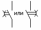 |
| 16. Контакт размыкающий с замедлением, действующим: 1) при срабатывании |
|
| 2) при возврате | |
| 3) при срабатывании и возврате | |
| Примечание к пп. 15 и 16. Замедление происходит при движении в направлении от дуги к ее центру | |
3. Примеры построения обозначений контактов двухпозиционных коммутационных устройств приведены в табл. 3.
| Наименование | Обозначение |
|---|---|
| 1. Контакт замыкающий выключателя: 1) однополюсный | |
| 2) трехполюсный | |
| 2. Контакт замыкающий выключателя трехполюсного с автоматическим срабатыванием максимального тока | |
| 3. Контакт замыкающий нажимного кнопочного выключателя без самовозврата с размыканием и возвратом элемента управления: 1) автоматически | |
| 2) посредством вторичного нажатия кнопки | |
| 3) посредством вытягивания кнопки | |
| 4) посредством отдельного привода (например нажатия кнопки-сброс) | |
| 4. Разъединитель трехполюсный | |
| 5. Выключатель-разъединитель трехполюсный | |
| 6. Выключатель ручной | |
| 7. Выключатель электромагнитный (реле) | 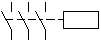 |
| 8. Выключатель концевой с двумя отдельными цепями | |
| 9. Выключатель термический саморегулирующий | |
| Примечание. Следует делать различие в изображении контакта и контакта термореле, изображаемого следующим образом | |
| 10. Выключатель инерционный | |
| 11. Переключатель ртутный трехконечный |
4. Примеры построения обозначений многопозиционных коммутационных устройств приведены в табл. 4.
| Наименование | Обозначение |
|---|---|
| 1. Переключатель однополюсный многопозиционный (пример шестипозиционного) | 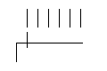 |
| Примечание. Позиции переключателя, в которых отсутствуют коммутируемые цепи, или позиции, соединенные между собой, обозначают короткими штрихами (пример шестипозиционного переключателя не коммутирующего электрическую цепь в первой позиции и коммутирующего одну и ту же цепь в четвертой и шестой позиции) | |
| 2. Переключатель однополюсный шестипозиционный с безобрывным переключателем | |
| 3. Переключатель однополюсный многопозиционный с подвижным контактом, замыкающим три соседние цепи в каждой позиции | |
| 4. Переключатель однополюсный многопозиционный с подвижным контактом, замыкающим три цепи, исключая одну промежуточную | |
| 5. Переключатель однополюсный многопозиционный с подвижным контактом, который в каждой последующей позиции подключает параллельную цепь к цепям, замкнутым в предыдущей позиции | |
| 6. Переключатель однополюсный шестипозиционный с подвижным контактом, не размыкающим цепь при переходе его из третьей в четвертую позицию | |
| 7. Переключатель двухполюсный четырехпозиционный | |
| 8. Переключатель двухполюсный шестипозиционный, в котором третий контакт верхнего полюса срабатывает раньше, а пятый контакт- позже, чем соответствующие контакты нижнего полюса | |
| 9. Переключатель многопозиционный независимых цепей (пример шести цепей) | |
| Примечания к пп. 1-9 1. При необходимости указания ограничения движения привода переключателя применяют диаграмму положения, например 1) привод обеспечивает переход от позиции 1 к позиции 4 и обратно | |
| 2) привод обеспечивает переход от позиции 1 к позиции 4 и далее в позицию 1; обратное движение возможно только от позиции 3 к позиции 1 | |
| 2. Диаграмму положения связывают с подвижным контактом переключателя линией механической связи | |
| 10. Переключатель со сложной коммутацией изображают на схеме одним из следующих способов: 1) общее обозначение (например обозначение восемнадцати позиционного роторного переключателя с шестью зажимами, обозначенными от A до F) | |
| 2) обозначение, составленное согласно конструкции | |
| 11. Переключатель двухполюсный трехпозиционный с нейтральным положением | |
| 12. Переключатель двухполюсный трехпозиционный с самовозвратом в нейтральной положение |
5. Обозначения контактов контактных соединений приведены в табл. 5.
| Наименование | Обозначение |
|---|---|
1. Контакт контактного соединения: 1) разъемного соединения - штырь - гнездо |
|
| 2) разборного соединения | |
| 3) неразборного соединения | 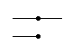 |
| 2. Контакт скользящий: 1) по линейной токопроводящей поверхности |
|
| 2) по нескольким линейным токопроводящим поверхностям | |
| 3) по кольцевой токопроводящей поверхности | |
| 4) по нескольким линейным кольцевым проводящим поверхностям | |
| Примечание. При выполнении схем с помощью ЭВМ допускается применять штриховку вместо зачернения | |
6. Примеры построения обозначений контактных соединений приведены в табл. 6.
| Наименование | Обозначение |
|---|---|
| 1. Соединение контактное разъемное | |
| 2. Соединение контактное разъемное четырехпроводное | |
| 3. Штырь четырехпроводного контактного разъемного соединения | |
| 4. Гнездо четырехпроводного контактного разъемного соединения Примечание. В пп. 2-4 цифры внутри прямоугольников обозначают номера контактов | |
| 5. Соединение контактное разъемное коаксиальное | |
| 6. Перемычки контактные (вид связи см. табл. 5 п.1) | 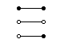 |
| 7. Колодка зажимов Примечание. Для указания видов контактных соединений допускается применять следующие обозначения: | |
| 1) колодки с разборными контактами | |
| 2) колодки с разборными и неразборными контактами | |
| 8. Перемычка коммутационная: 1) на размыкание | |
| 2) с выведенным штырем | |
| 3) с выведенным гнездом | |
| 4) на переключение | |
| 9. Соединение с защитным контактом |
7. Обозначения элементов искателей приведены в табл. 7.
| Наименование | Обозначение |
|---|---|
| 1. Щетка искателя с размыканием цепи при переключении | |
| 2. Щетка искателя без размыкания цепи при переключении | |
| 3. Контакт (выход) поля искателя | |
| 4. Группа контактов (выходов) поля искателя | |
| 5. Поле искателя контактное | |
| 6. Поле искателя контактное с исходным положением Примечание. Обозначение исходного положения применяют при необходимости |
|
| 7. Поле искателя контактное с изображением контактов (выходов) | |
| 8. Поле искателя с изображением групп контактов (выходов) | |
8. Примеры построения обозначений искателей приведены в табл. 8.
| Наименование | Обозначение |
|---|---|
| 1. Искатель с одним движением без возврата щеток в исходное положение | |
| 2. Искатель с одним движением c возвратом щеток в исходное положение | |
| Примечание. При использовании искателя в четырехпроводном тракте применяют обозначение искателя с возвратом щеток в исходное положение | |
| 3. Искатель с двумя движениями с возвратом щеток в исходное положение | |
| 4. Искатель релейный | |
| 5. Искатель моторный с возвратом в исходное положение | |
| 6. Искатель моторный с двумя движениями, приводимый в движение общим мотором | |
| 7. Искатель с изображением контактов (выходов) с одним движением без возврата щеток в исходное положение: 1) с размыканием цепи при переключении | |
| 2) без размыкания цепи при переключении | |
| 8. Искатель с изображением контактов (выходов) с одним движением с возвратом щеток в исходное положение: 1) с размыканием цепи при переключении | |
| 2) без размыкания цепи при переключении | |
| 9. Искатель с изображением групп контактов (выходов) (пример искателя с возвратом щеток в исходное положение) | |
| 10. Искатель шаговый с указанием количества шагов вынужденного и свободного искания (пример 10 шагов вынужденного и 20 шагов свободного искания) | |
| 11. Искатель с двумя движениями с возвратом в исходное положение и с указанием декад и подсоединения к определенной (шестой) декаде | |
| 12. Искатель с двумя движениями, с возвратом в исходное положение и многократным соединением контактных полей несколькими искателями (например двумя) | |
| Примечание. Если возникает необходимость указать, что искатель установлен в нужное положение с помощью маркировочного потенциала, поданного на соответствующий контакт контактного поля, следует использовать обозначение (например положения 7) |
9. Обозначения многократных координатных соединителей приведены в табл. 9.
| Наименование | Обозначение |
|---|---|
| 1. Соединитель координатный многократный. Общее обозначение | |
| 2. Соединитель координатный многократный в четырехпроводном тракте | |
| 3. Вертикаль многократного координатного соединителя Примечание. Порядок нумерации выходов допускается изменять | |
| 4. Вертикаль многократного координатного соединителя с m выходами | |
| 5. Соединитель координатный многократный с n вертикалями и с m выходами в каждой вертикали | |
| Примечание. Допускается упрощенное обозначение: n - число вертикалей, m - число выходов в каждой вертикали |
Приложение. Справочное
10. Размеры (в модульной сетке) основных условных графических обозначений приведены в табл. 10.
| Наименование | Обозначение |
|---|---|
| 1. Контакт коммутационного устройства 1) замыкающий | |
| 2) размыкающий | |
| 3) переключающий | |
| 2. Контакт импульсный замыкающий при срабатывании и возврате | |
| 3. Переключатель двухполюсный шестипозиционный, в котором третий контакт верхнего полюса срабатывает раньше, а пятый контакт - позже, чем соответствующие контакты нижнего полюса |